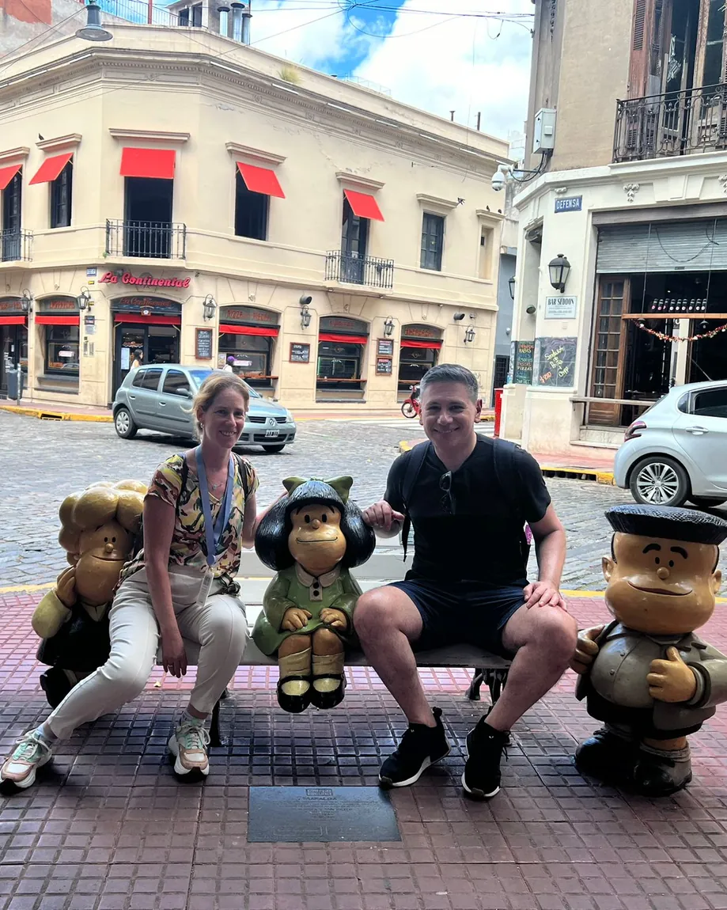
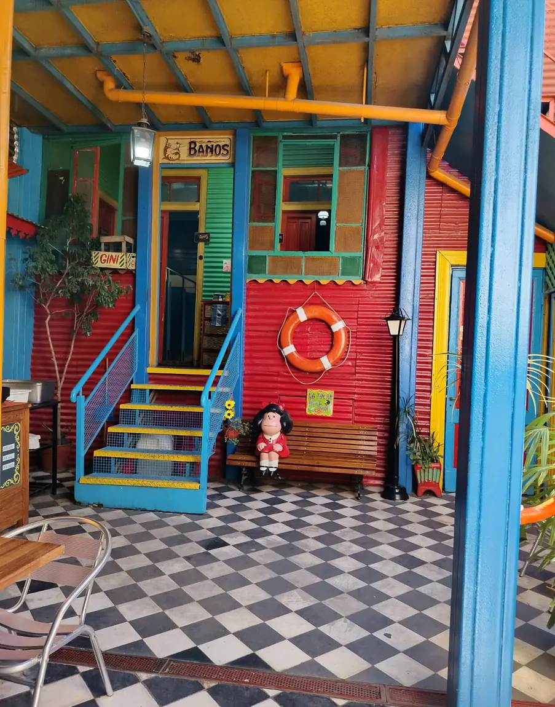

Buenos Aires Essentials Los imperdibles de la ciudad
4 hours · private · with transport4 horas · privado · con traslado
A private introduction to the heart of Buenos Aires. Descubrí la esencia de Buenos Aires en un recorrido privado y personalizado.
We'll see the different faces of the city: the history and political life of Plaza de Mayo, the traditional, bohemian spirit of San Telmo, the immigrant culture and colour of La Boca — Caminito, with the Museo de la Pasión Boquense as an option — Puerto Madero, its past as a port and its modern present, and the parks and street life of Palermo.
It's for anyone who wants a first look at Buenos Aires, and to see it through the stories, the details and the eyes of a local guide.
The tour ends in Recoleta, one of the most elegant neighbourhoods in the city, known for its stately architecture, its green spaces and its cultural life. You can stay on to keep exploring, or I'll take you back to your hotel.
En este recorrido descubriremos diferentes caras de Buenos Aires: la historia y la vida política en la Plaza de Mayo, el espíritu tradicional y bohemio de San Telmo, la cultura inmigrante y el color de La Boca (Caminito) con el Museo de la Pasión Boquense (opcional), Puerto Madero —su pasado como puerto y su presente moderno— y los espacios verdes y la vida urbana de Palermo.
Un recorrido pensado para quienes quieren tener una primera mirada de Buenos Aires, pero también descubrirla a través de historias, detalles y la mirada de un guía local.
El tour finaliza en Recoleta, uno de los barrios más elegantes y tradicionales de Buenos Aires, reconocido por su arquitectura señorial, sus espacios verdes y su rica vida cultural. Podés elegir permanecer allí para seguir explorando la zona o regresar a tu alojamiento.
IncludesIncluye
- Private transportTraslado privado
- Bilingual guide, Spanish–EnglishGuía bilingüe español-inglés
- Hotel pick-up and drop-offPick-up y drop-off en el hotel